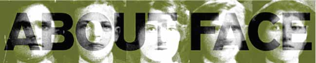

 |
||||
Everyone knows that all terrorists look the same. They all have that terrorist look to them: a prominent brow line, or shifty eyes and a scowl. Viewed in a lineup beside normal faces, it is easy to point one out. Bricklayer … blacksmith … terrorist. Attorney … line chef … terrorist. Luckily, terrorists can be photographed, unlike vampires, whose images evade film. We can soon start catching them in our airports.
Exercise 1: Do you resemble a terrorist? Go to your bathroom mirror and measure the distance between the centers of your eyes in millimeters. If the number exceeds 60mm, there is potential that you are one. If you additionally have felt what could be interpreted as aggressive behavior, you may want to pursue Exercise 2. In the late 18th century, it became clear that just by looking at someone's face, it could be determined he was a criminal. One hundred years later, photography's accessibility as a tool of documentation popularized a method of cataloguing faces into groups of physical attributes that could be linked to psychological disorders. Physiognomy, as a respected science of the day, traced patterns of delinquency to the physical layout of a face. Illustrated research diagrammed faces, categorizing certain physical features as typical of criminal behavior. “If you see a forehead or a nose like this photograph on the street,” articles emphasized, “you're looking at a criminal. Watch your purse!” Slight gestures and gait were also analyzed as telling factors of a subject's personality. It was socially acceptable at the time to make assumptions that looking a person in the eye was a view into the soul, so the physical placement of the eyes was crucial to determining whether a person could be trusted. High brow-lines were always found on the faces of the wealthy, the upright citizens, while heavy, hooded lids and deep-set eyes were typical of the uneducated and the morally depraved. Clearly, eyebrow shape is crucial in deciphering a person's morals. It is from this type of unbiased analysis that the current terms highbrow and lowbrow make the equally logical distinction between high art and pop culture. In contemporary thinking on the topic, since there are no such distinctions as class and morality, we naturally no longer judge each other by physical appearance. Attractive people have to wait in line at the bank, right along with all the unattractive people. Blue-collar worker's wives have access to the same plastic surgeons as CEO's wives do. All races gather around the same bottled water unit in the morning at the workplace. Thanks to our country's deep commitment toward political correctness , there is no reason to talk out loud about physical differences, so it's easy and convenient to ignore skin color and class and treat each other like amorphous and sexless amoebas that we strive to emulate. |
||||